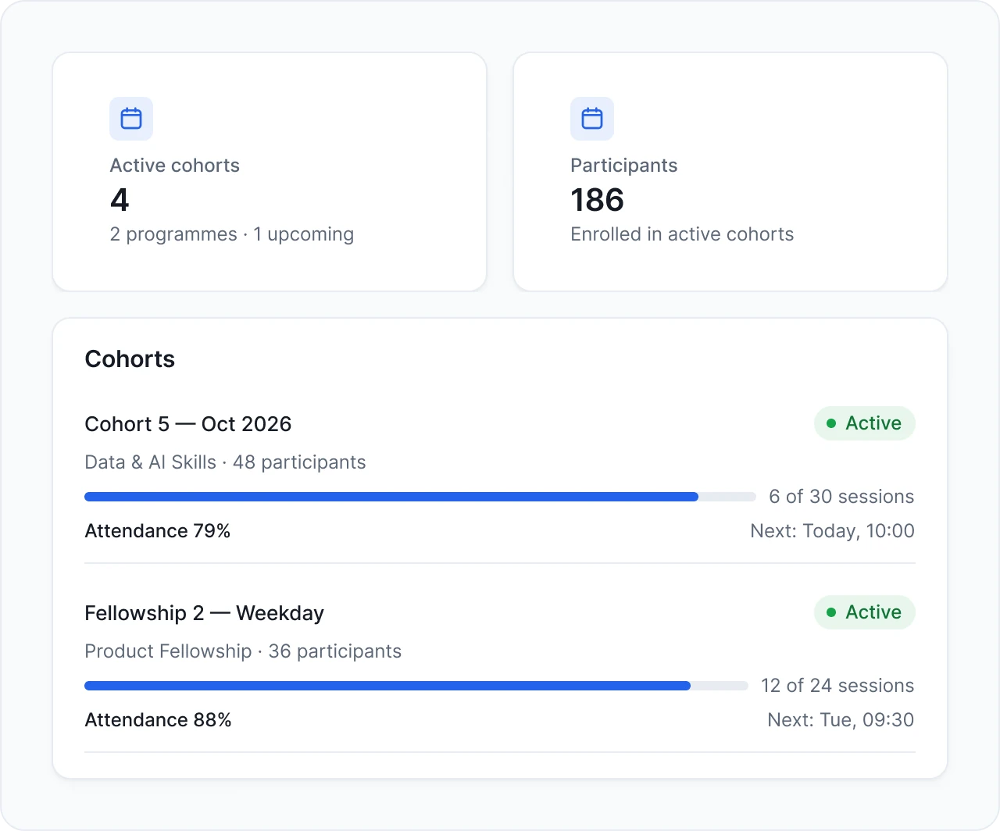
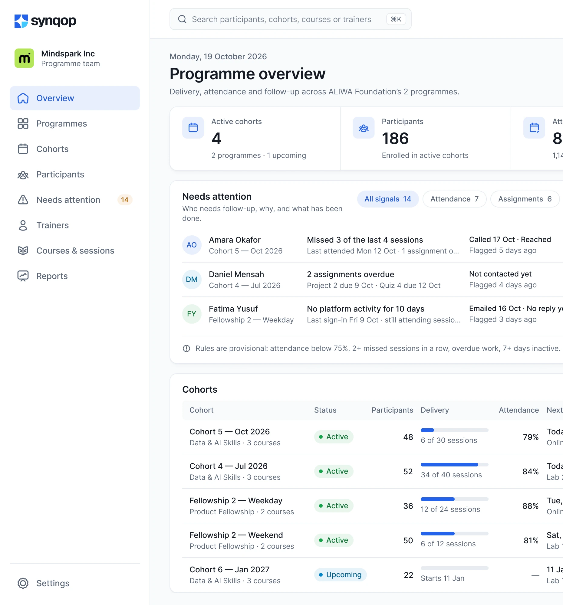
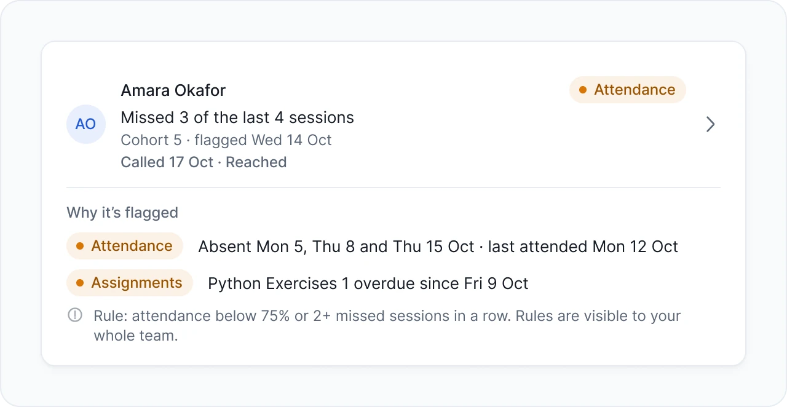
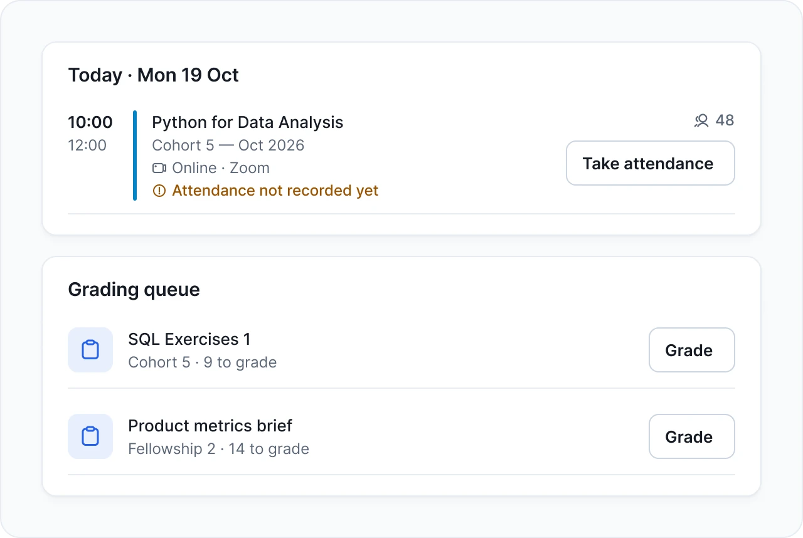
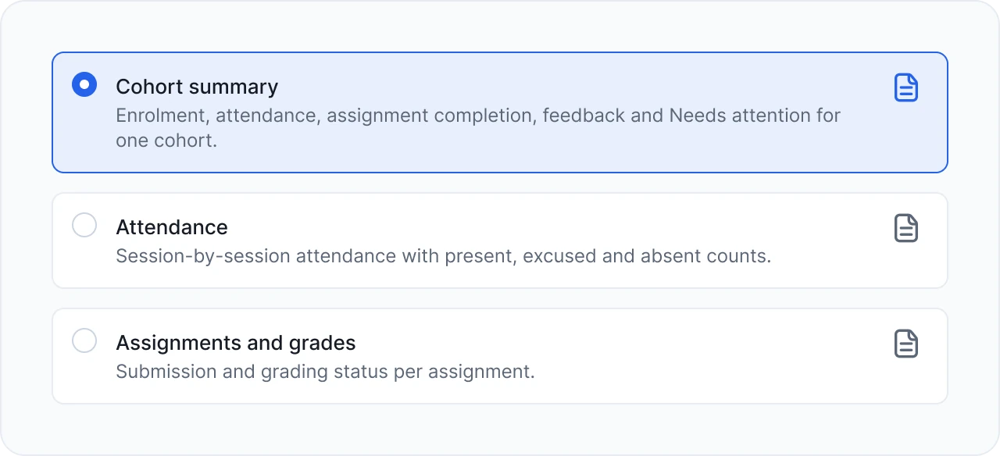

Everything has a place.
Bring programmes, cohorts, participants, trainers, and delivery details together in one operational picture.

STATUS Now in pilot
Synqop helps training academies, bootcamps and skills-development programmes manage cohorts, participants, sessions, assignments, and progress in one place; simplifying programme operations and keeping teams organised.
DESIGNED FOR THE PEOPLE WHO MAKE PROGRAMMES WORK.

A CLEARER WAY TO OPERATE
Synqop helps your organisation see what's happening and where attention is needed.
Bring programmes, cohorts, participants, trainers, and delivery details together in one operational picture.

See the signals behind a participant status, so teams can review context and decide what to do next.

Keep attendance, assignments, and participant progress easier to follow across your programmes.

Bring programme activity and progress into a clearer view to support organisational decisions.

THE PROGRAMME LOOP
Move from day-to-day delivery to a clearer understanding of what is happening and where support may help.
Organise programmes, cohorts, people, and planned activities.
Organise programmes, cohorts, people, and planned activities.
Keep sessions, attendance, and assignments in view as work happens.
Notice patterns and signals that may need a closer look.
Coordinate a considered follow-up with the right people.
Bring operational details together into useful summaries.
NOW IN PILOT
Run a real cohort on Synqop with our team alongside you. Pilot partners help decide what we build next, from how follow-ups work to which reports matter most.